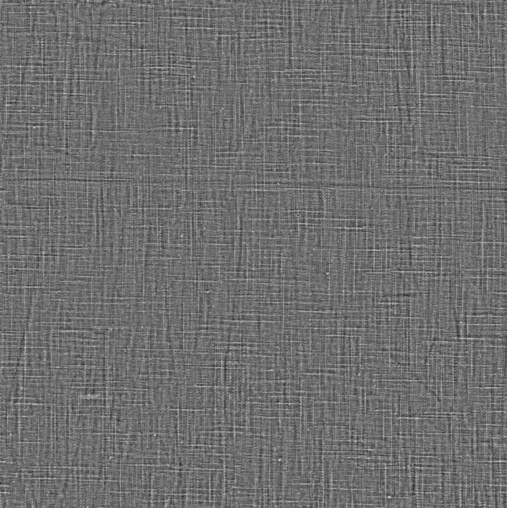
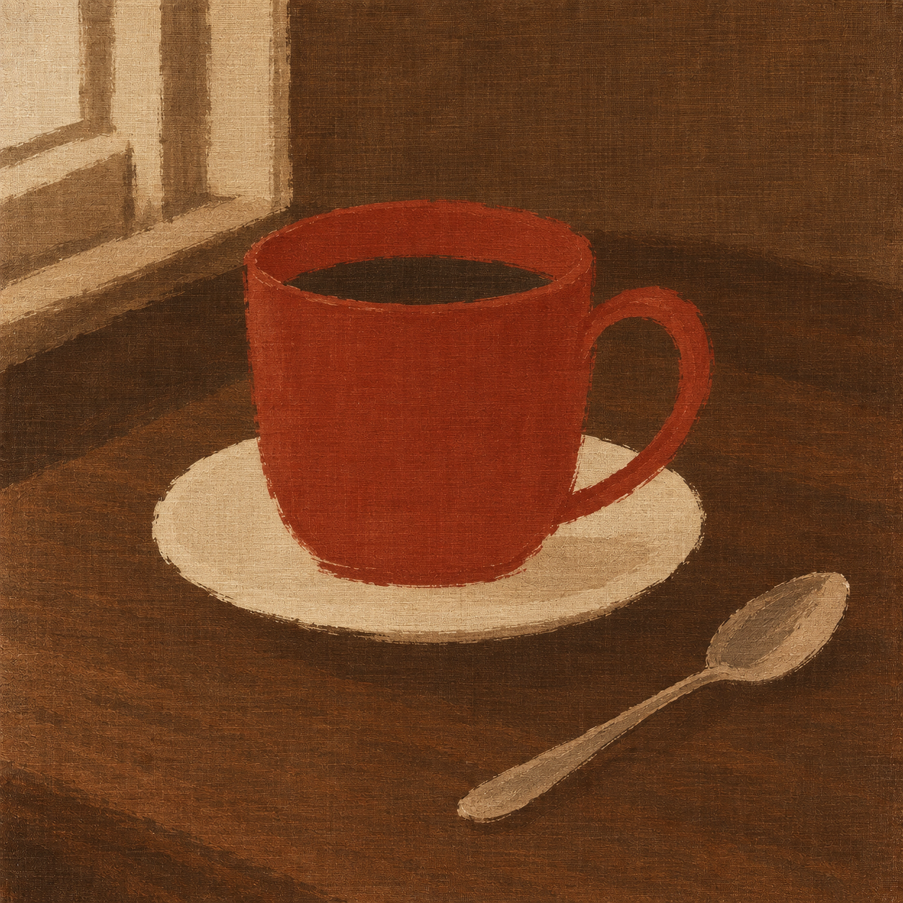

原色、毛笔笔意与真实织纹
本轮修正水彩偏向、过量改色与卷曲假纹理。原图管颜色与内容，作品参考管用笔与色面，实物素材管经纬结构。实际出图仍是候选，机械检查通过不等于风格通过。
实物材质依据
 真实亚麻 AO 贴图：只借经纬结构，不借灰白颜色
真实亚麻 AO 贴图：只借经纬结构，不借灰白颜色
灰度高度图：辅助辨认纤维方向来自 Poly Haven Rough Linen，CC0。原素材未修改，非摄影师同款/已上底油画布的证明。来源、许可与用法
跨主题测试 · 砖红静物
目标是原来的砖红/米白/暖棕关系，背景更统一，主体用笔更简洁；一杯、一把手、一碟、一勺及方形裁切保留。
 输入：已有 AI 生成静物
输入：已有 AI 生成静物
当前静物候选 · 未获用户视觉认可风格状态和残留偏差见实际检查记录；所有版本保留，不能把最后一版自动当成合格图。
当前逐项记录 · 完整实际提示词 · 文件尺寸与校验
上一轮对照 · 早期跨主题对照